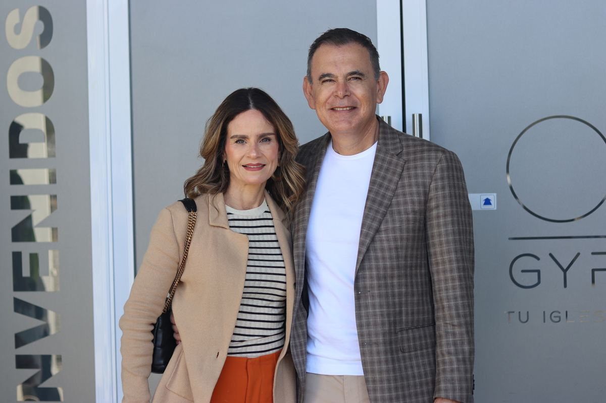

Gracia y Fe Iglesia

Liderazgo
Pastores Fundadores · Desde 2017
Ebrahim y Sofía Carcur son los pastores fundadores de Gracia y Fe Iglesia desde el 2017, en Ciudad Victoria Tamaulipas.
Gracia y Fe nace con el deseo de ser un lugar donde cada persona pueda crecer en su fe, encontrar propósito y vivir una relación genuina con Jesús, centrada en la gracia, fundamentada en la fe y comprometida con impactar positivamente a las familias y a nuestra sociedad.
Misión
Todo lo que hacemos — nuestros servicios, ministerios y comunidad — nace de este propósito central: ver vidas transformadas por el poder del evangelio.
Visión
Llenando Ciudad Victoria con el Evangelio y extendiendo Su Reino hasta las naciones.
Lo que creemos
"Dios los salvó por su gracia cuando creyeron. Ustedes no tienen ningún mérito en eso; es un regalo de Dios."
— Efesios 2:8-9Somos una comunidad de personas cuyas vidas han sido transformadas por el evangelio de la Gracia y Fe en Jesús. Caminamos juntos compartiendo esperanza, propósito y nuevas oportunidades. Creemos en el poder del cambio real cuando las personas conocen a Cristo.
Es el acto amoroso mediante el cual Dios rescata al ser humano del pecado y de la separación espiritual que este produce. No se trata solo de un cambio de conducta o de una mejora moral, sino de una transformación profunda del corazón y de la restauración de nuestra relación con Dios.
La Biblia enseña que todos hemos pecado y estamos lejos de la gloria de Dios, y por esa razón necesitamos ser salvos. Aunque tratemos de hacer lo correcto, no podemos ser completamente justos por nuestras propias fuerzas. El pecado trae consecuencias y nos aleja de Dios, pero Él no nos dejó solos.
Jesús murió en la cruz y resucitó para pagar el precio de nuestros pecados. Gracias a ese sacrificio, Dios nos ofrece perdón y una vida nueva. Esto es lo que se conoce como la gracia de Dios: un regalo que no merecemos, pero que Él nos da libremente. La salvación no depende de lo que hacemos, sino de lo que Jesús ya hizo por nosotros.
Ser salvo significa creer en Jesucristo, reconocer nuestros errores y decidir seguirlo. Cuando una persona acepta a Jesús en su corazón, Dios la perdona y comienza a transformar su vida. Esa transformación se nota en la forma de pensar, de actuar y de amar a los demás.